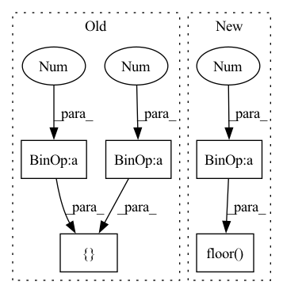

Pattern ID :33420

Before Change
center = [float(box[0]), float(box[1]), float(box[2])]
size = [float(box[3]), float(box[5]), float(box[4])]
ry = float(box[6])
front = [-1 * np.sin(ry), -1 * np.cos(ry), 0]
up = [0, 0, 1]
left = [-1 * np.cos(ry), np.sin(ry), 0]
After Change
ry = float(box[6])
yaw = ry - np.pi
yaw = yaw - np.floor(yaw / (2 * np.pi) + 0.5) * 2 * np.pi
world_cam = calib["world_cam"]
In pattern: SUPERPATTERN
Frequency: 4
Non-data size: 5
Instances
Fragment ID: 96190267
Project Name: isl-org/open3d-ml
Commit Name: 0dfc7fa4578469b1ffbc19f9647592de0bd6fc04
Time: 2020-12-22
Author: lukas_prantl@hotmail.de
File Name: ml3d/datasets/nuscenes.py
M Class Name: NuScenes
N Class Name: NuScenes
M Method Name: read_label(2)
N Method Name: read_label(1)
M Parent Class: BaseDataset
N Parent Class: BaseDataset
M File Name: ml3d/datasets/nuscenes.py
N File Name: ml3d/datasets/nuscenes.py
M Start Line: 98
M End Line: 107
N Start Line: 97
N End Line: 115
'>
Before Change
if stride > 1:
n_steps = math.ceil(((L_in - kernel_size * dilation) / stride) + 1)
L_out = stride * (n_steps - 1) + kernel_size * dilation
padding = [kernel_size // 2, kernel_size // 2]
else:
L_out = (L_in - dilation * (kernel_size - 1) - 1) // stride + 1
After Change
dilation : int
if stride > 1:
padding = [math.floor(kernel_size / 2), math.floor(kernel_size / 2)]
else:
L_out = (
'>
Fragment ID: 96190266
Project Name: speechbrain/speechbrain
Commit Name: a6886689ebf6174337339cabc2cae4c28cdc84b3
Time: 2021-10-31
Author: mirco.ravanelli@gmail.com
File Name: speechbrain/nnet/CNN.py
M Class Name: AnonimousClass
N Class Name: AnonimousClass
M Method Name: get_padding_elem(4)
N Method Name: get_padding_elem(4)
M Parent Class:
N Parent Class:
M File Name: speechbrain/nnet/CNN.py
N File Name: speechbrain/nnet/CNN.py
M Start Line: 1116
M End Line: 1123
N Start Line: 1116
N End Line: 1124
'>
Before Change
if stride > 1:
n_steps = math.ceil(((L_in - kernel_size * dilation) / stride) + 1)
L_out = stride * (n_steps - 1) + kernel_size * dilation
padding = [kernel_size // 2, kernel_size // 2]
else:
L_out = (L_in - dilation * (kernel_size - 1) - 1) // stride + 1
After Change
dilation : int
if stride > 1:
padding = [math.floor(kernel_size / 2), math.floor(kernel_size / 2)]
else:
L_out = (
'>
Fragment ID: 96190265
Project Name: speechbrain/speechbrain
Commit Name: 48782c88a8f9ce2b092e6f3adb43f28fde86fa51
Time: 2022-03-02
Author: wangyingzhi666@gmail.com
File Name: speechbrain/nnet/CNN.py
M Class Name: AnonimousClass
N Class Name: AnonimousClass
M Method Name: get_padding_elem(4)
N Method Name: get_padding_elem(4)
M Parent Class:
N Parent Class:
M File Name: speechbrain/nnet/CNN.py
N File Name: speechbrain/nnet/CNN.py
M Start Line: 1132
M End Line: 1139
N Start Line: 1135
N End Line: 1143
'>
Before Change
center = [float(box[0]), float(box[1]), float(box[2])]
size = [float(box[3]), float(box[5]), float(box[4])]
ry = float(box[6])
front = [-1 * np.sin(ry), -1 * np.cos(ry), 0]
up = [0, 0, 1]
left = [-1 * np.cos(ry), np.sin(ry), 0]
After Change
ry = float(box[6])
yaw = ry - np.pi
yaw = yaw - np.floor(yaw / (2 * np.pi) + 0.5) * 2 * np.pi
world_cam = calib["world_cam"]
'>
Fragment ID: 96190271
Project Name: isl-org/open3d-ml
Commit Name: 0dfc7fa4578469b1ffbc19f9647592de0bd6fc04
Time: 2020-12-22
Author: lukas_prantl@hotmail.de
File Name: ml3d/datasets/lyft.py
M Class Name: Lyft
N Class Name: Lyft
M Method Name: read_label(2)
N Method Name: read_label(1)
M Parent Class: BaseDataset
N Parent Class: BaseDataset
M File Name: ml3d/datasets/lyft.py
N File Name: ml3d/datasets/lyft.py
M Start Line: 98
M End Line: 106
N Start Line: 96
N End Line: 113